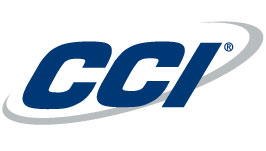

Conheça as empresas que abriram suas portas para a gente confiando em
nossas soluções. Que bons ventos tragam ainda mais parceiros!
O que temos de mais importante é a gratificação de ver nossos
clientes satisfeitos e manter com isso uma parceria duradoura.
Com esse intuito, a W-Soluções em Informática garante os melhores
resultados e uma relação de confiança e dedicação aos nossos clientes.

Consorcio CCL CCM
Rua Jose de Salles, 100 - Centro
Lima Duarte
Minas Gerais
(32)3281-3024
Santa Casa de Misericordia de Lima Duarte
Rua Tancredo Alves, 263 - Centro
Lima Duarte
Minas Gerais
(32)3281-1222